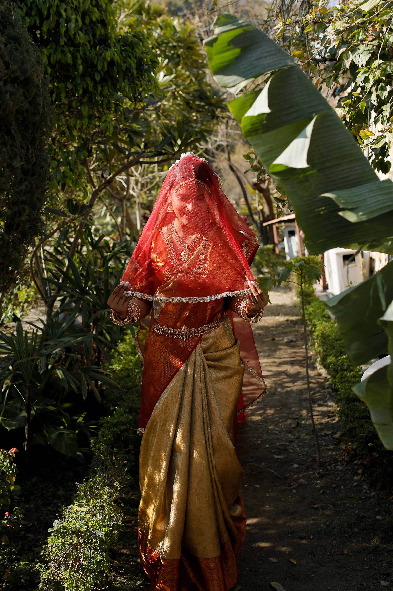

A passionate photographer dedicated to capturing the raw essence of human connection through candid moments across the world. With an eye for untold stories, I transform fleeting emotions and everyday interactions into powerful, timeless imagery.